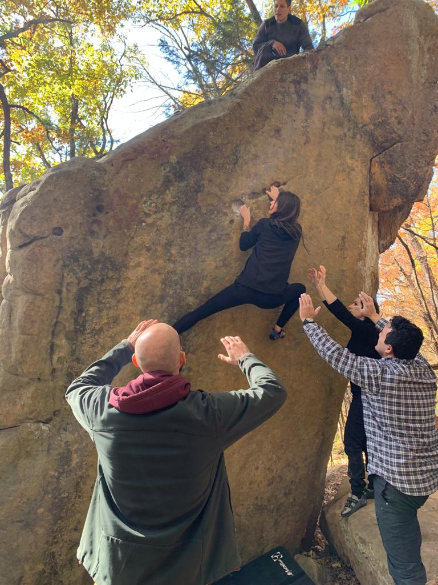
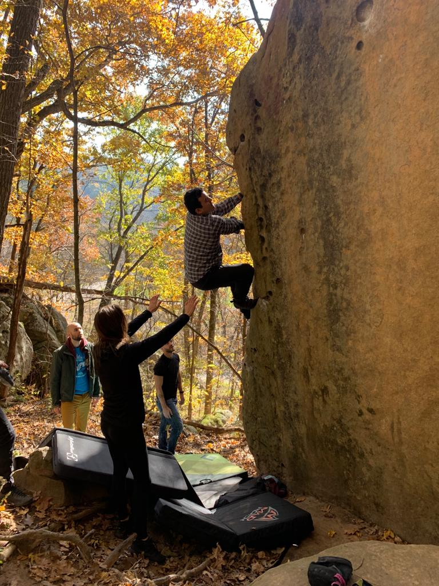

Bouldering

I'm going to be real with you cool cats bouldering freaks me out. I once saw a guy snap his ankle almost completely off after a controlled fall and the memory has stayed with me. That being said while falling to the ground instead of to the end of a rope most likely increases your chances of injury it must be acknowledged that the lower height in bouldering probably decreases your chance of death so the choice is yours.
That being said bouldering is super fun. It's certainly the most common type of indoor climbing as bouldering wall are just a lot easier to build than their large counter parts. It also tends to be more of an intelectual persuit than roped climbing. All rock climbing requires problem solving, you have to learn the different ways to position your body in order to stay balanced and use a least energy as possible while making it up the wall. Bouldering however tends to be involve very short but very technical climbing. Where as a roped route might have long stretches where the climbing is pretty easy a boulder problem (they're even called problems!) will be hard almost throughout. Also since there is no rope there is no resting, you either get all the way to the top in one push or you never make it. Staring at and attempting a problem for hours only to finally get to the top is one of life's great pleasures. As an example here's a video I took in an indoor gym. I was so mad I couldn't get this problem I finally resorted to filming myself only to finally get to the top.
When bouldering you should ideally have more than one spotter surrounding a climber with their hands in the air read to catch support the upper half of the climber to make sure the feet land first. Having crash pads laid out is also essential as injurys can occur when people land with their feet or butts on uneven ground or jagged rocks. Here are some examples of good technique
Notice how my friend's Sona and Will are standing on that rock to make sure if she falls she doesn't hit it. Also notice how my bald ass is just kinda standing there with my hands up not really doing anything to help
In this picture look at where the mats have been placed. Covering both the most likely place Will is going to fall and also the rock he could potentially hit his head on after his feet hit the ground. Again notice yours truly not even pretending to contribute this time.
So there you have it, boudering in a nut shell. The big take-aways are probabaly that it is super fun and also kind of risky. Make sure you are bouldering with people you trust as your life is literally in their hands. Happy climbing ya'll.
Back to Homepage